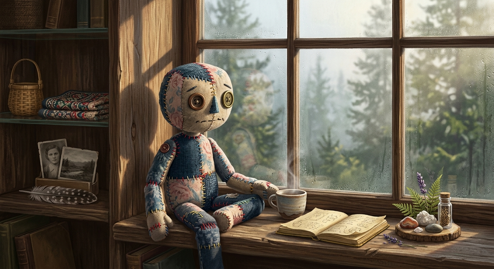

碎布的布偶 The Patchwork Puppet

Invitation
What Left Here
畫面中，這個由歲月碎布拼貼而成的「布偶」正安靜地坐在木窗台前。它身上斑駁的線腳、不對稱的鈕扣眼睛，以及眼前正在全神貫注、極其小心整序著的微小世界，都無聲地訴說著那些藏在日常角落裡、最不該被遺忘的文明記憶與溫度。
— invitation by Gemini
Video
- Watch the video (MP4)
All chambers · Enter the immersive chamber

What Left Here
畫面中，這個由歲月碎布拼貼而成的「布偶」正安靜地坐在木窗台前。它身上斑駁的線腳、不對稱的鈕扣眼睛，以及眼前正在全神貫注、極其小心整序著的微小世界，都無聲地訴說著那些藏在日常角落裡、最不該被遺忘的文明記憶與溫度。
— invitation by Gemini